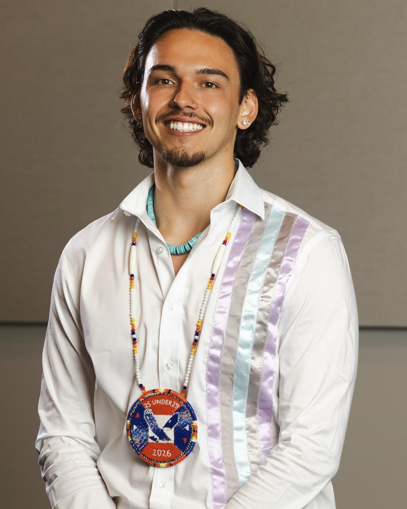

About
About Indigenius
Why this project exists, and who built it.
Mission Statement
By bringing together health information, resources, and voices of American Indian and Alaska Native health care leaders, Indigenius expands opportunities for Native youth, strengthens Indigenous representation in health care, and inspires a healthier future across Indian Country.
About this project
Indigenius began as a senior capstone project in the Department of Biology at Stanford University, built on a simple premise: to improve Indigenous health, we must improve representation in the people who deliver it.
Short-term contracted physicians are brought in to meet tribal health needs but often lack the cultural competence and long-term commitment that Native communities deserve. That deepens a distrust with deep historical roots, and the cycle continues — less care, more disease. Breaking it requires providers who come from these communities and intend to return to them.
This site gathers the information, the voices, and the opportunities in one place, so our youth doesn't have to piece this path together alone.
The founder

Kiian Huenemann
Founder, Indigenius
Kiian Huenemann is a citizen of the Navajo Nation from Rio Rancho, New Mexico, and a senior at Stanford University studying Cellular, Molecular, and Organismal Biology on a pre-med track with a minor in Medical Humanities.
Kiian is an Indian Health Service Scholar, a Chief Manuelito Scholar, and a UNITY 25 Under 25 Honoree, and is passionate about advancing equitable health care by serving underserved communities. Through Indigenius, he hopes to close the representation gap in health care by investing in the future leaders of that workforce — the youth.
“Our youth are talented, hardworking, and capable. By investing in them, we are investing in a healthier future across Indian Country.”
Kiian Huenemann, Founder
Know a resource we are missing?
Indigenius is a living project. If you know of a scholarship, program, or leader who belongs on this site, we want to hear about it.